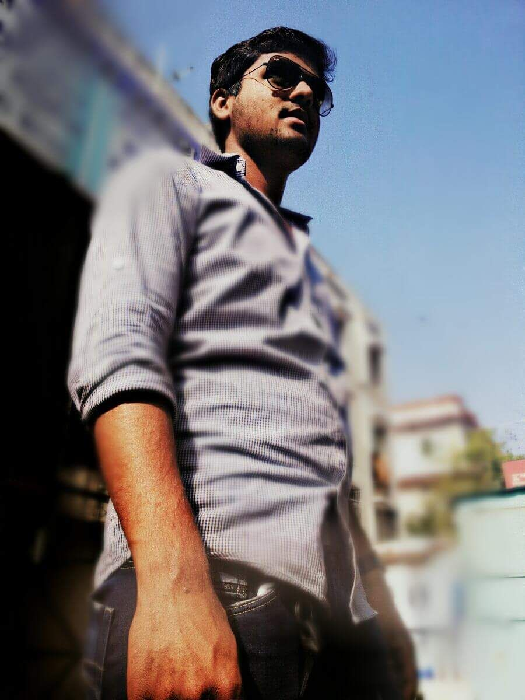

Snapshot by KY.
Quotes That Near To My Heart
Thought
I never said I wanted a 'happy' life but an interesting one. From separation and loss, I have learned a lot. I have become strong and resilient, as is the case of almost every human being exposed to life and to the world. We don't even know how strong we are until we are forced to bring that hidden strength forward.

YAHYA KALWATAR
I am from Bhavnagar. Currently I am working for the Regional Transport Office Bhavnagar.